Префектура Исикава · Кага, онсэн Ямасиро · рёкан
Araya Totoan: рёкан в онсэне Ямасиро, где восемнадцать поколений хранят источник дома Маэда
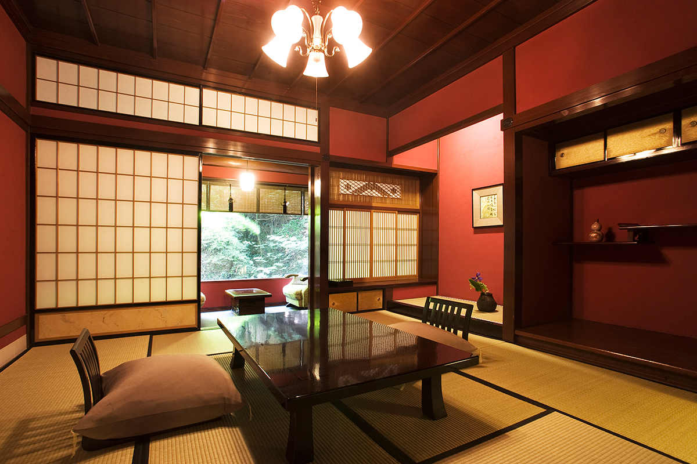
В онсэне Ямасиро, одном из горячих источников Каги, есть рёкан, хозяева которого восемнадцать поколений подряд отвечают за местную горячую воду. Когда-то им доверили её князья дома Маэда, а среди постояльцев был молодой Росандзин Китаодзи.
История
Хранители источника
Онсэн Ямасиро входит в Кага-онсэнкё, группу горячих источников на юге префектуры Исикава. Их четыре: Ямасиро, Яманака, Авадзу и Катаямадзу. Жителям Кансая они давно знакомы лучше всех других, а с открытием синкансэна Хокурику сюда всё чаще приезжают и из Токио. Весной 2024 года поезд дошёл прямо до станции Кага-Онсэн.
Источнику Ямасиро около 1300 лет. По преданию, его нашёл в 725 году монах Гёки, который шёл молиться на священную гору Хакусан. Фиолетовое облако привело его к луже, где ворона залечивала раненое крыло.
С эпохи Мэйдзи в Ямасиро любили останавливаться писатели и художники, и среди них поэтесса Акико Ёсано (1878–1942).
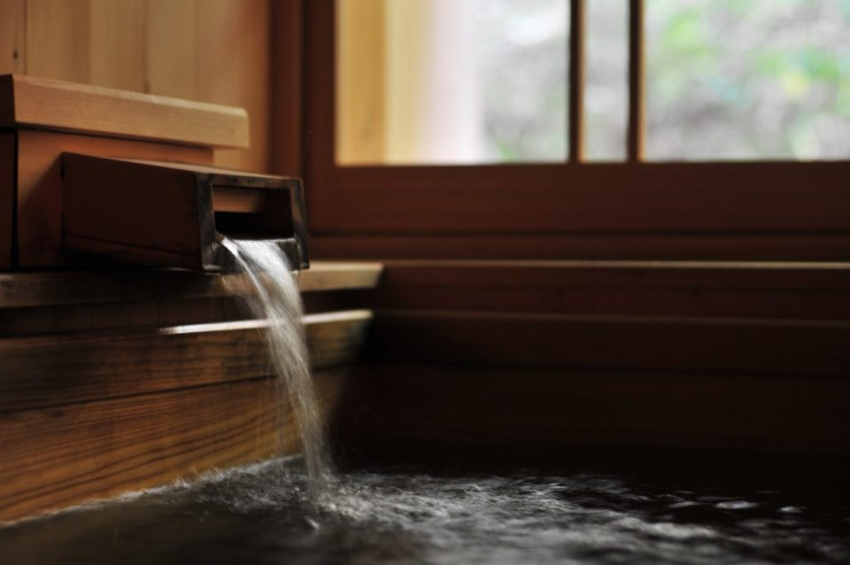
Рёкан Araya Totoan стоит в самом центре городка. Князья дома Маэда, правившие Кагой и её владением Дайсёдзи, поручили семье Арая должность «хранителя источника», и с тех пор она передаётся от отца к сыну. Хозяин рёкана представляет восемнадцатое поколение семьи. При князьях здесь останавливались правители, в эпоху Мэйдзи приезжали члены императорской семьи.
«Тото» в названии значит «текущий без остановки», полноводный. И вода здесь действительно не иссякала ни разу с тех пор, как источник открыли.
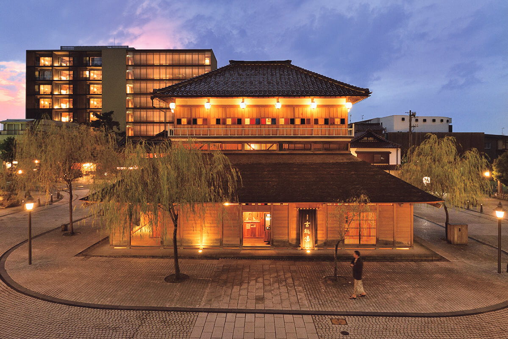
Напротив рёкана есть и старая общественная баня «Ко-соую», в неё можно заглянуть заодно.
Дом
Каждое поколение начинает заново
Глава одного старинного киотского дома, торгующего тканями для кимоно, как-то сказал: если старая фирма только хранит наследство, она обязательно придёт в упадок. Каждый новый хозяин должен браться за дело так, будто основывает его сам. Araya Totoan живёт именно так. Здесь не устраивают громких «обновлений», но при каждом приезде что-нибудь меняется: часть номера, уголок дома, посуда за ужином. Перемены скромные, их легко не заметить, и в этом видна сила старого дома.
Снаружи здание выглядит обыкновенно, и вход у него неприметный. Внутри сразу чувствуется тишина старого дома, и спина сама выпрямляется. Гостей встречает хозяйка рёкана, за её спиной стоит ширма с ятагарасу, священной вороной, которую написал Росандзин Китаодзи. Стоит снять обувь, и становится легко: полы повсюду, даже в лифте, покрыты татами, так что тапочки не нужны.
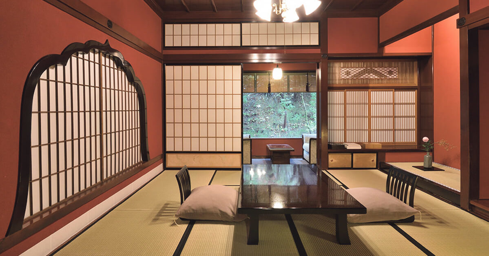
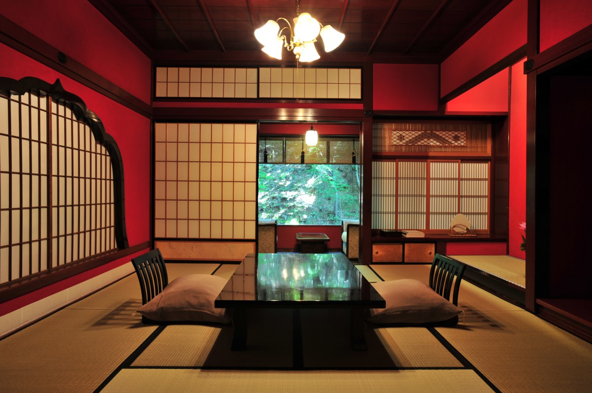
В «Отин-но ма» всё осталось как прежде. Другие номера, «Вакана» или «Кутани-Кэнроку», устроены по-современному: просторная ванная под открытым небом и отдельная спальня с низкой кроватью. Так хозяин сохраняет традицию и при этом не перестаёт её обновлять.
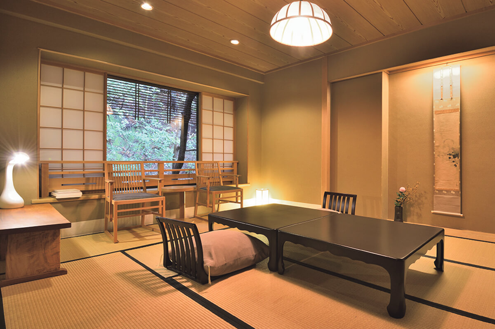
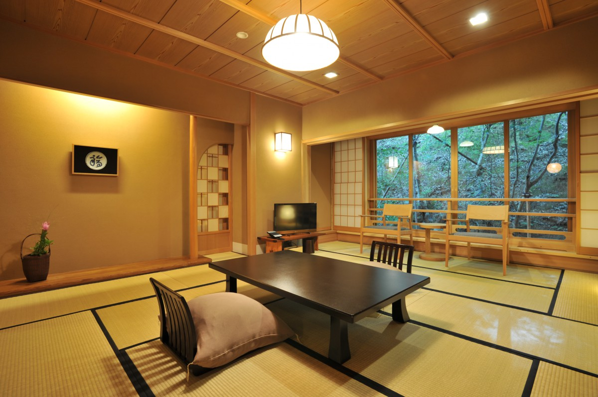
В «Вакане» ванна полуоткрытая, и в ней две купели одна над другой, как ступени рисовых террас. Вода из верхней перетекает в нижнюю, мелкую, где можно лежать. Такую затею, видимо, придумал хозяин, который всё время ищет, чем ещё порадовать гостей.
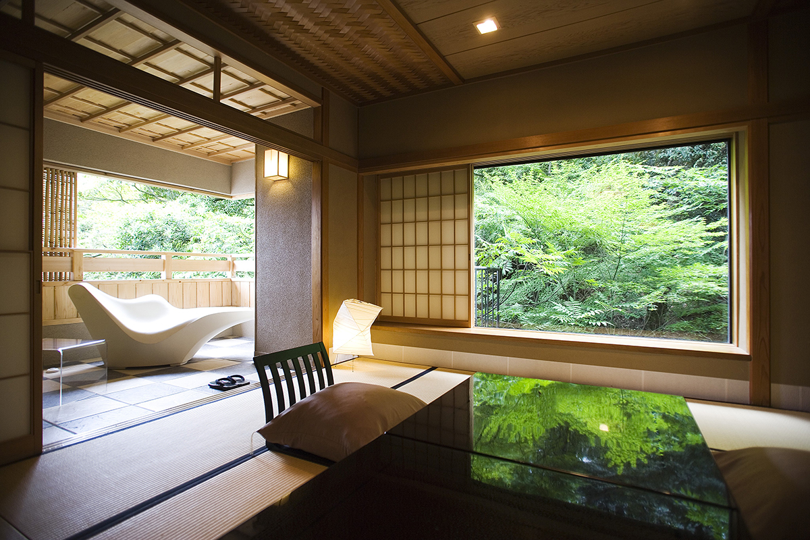
За садом по крытой галерее можно дойти до деревянного домика «Арисугава-сансо». Его построили в начале эпохи Мэйдзи по распоряжению императорского двора. Здесь был бар, в годы пандемии он закрылся, а в 2023 году домик стал отдельным номером.
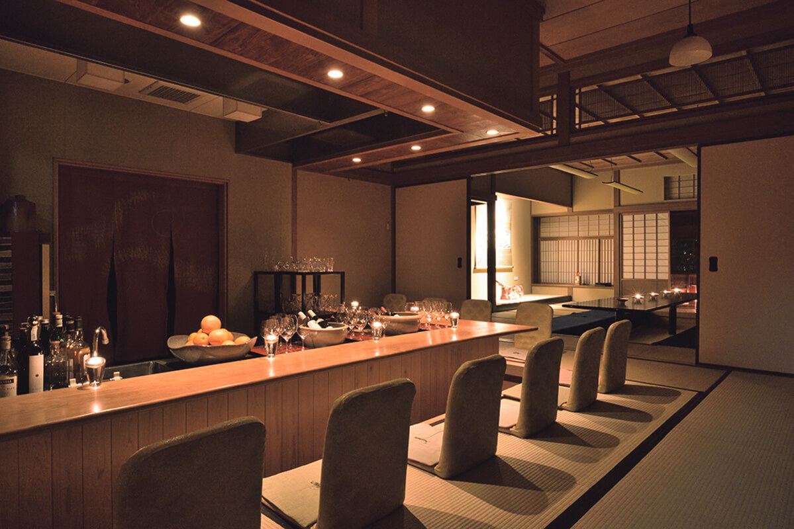
Онсэн
Три бани и вода с глубины нескольких десятков метров
Горячая вода поднимается здесь с глубины всего нескольких десятков метров, и в сутки её набирается 540 коку, примерно 100 000 литров. Это натриево-кальциевая сульфатно-хлоридная вода: мягкая на коже и прогревающая до самого нутра. Воду не подогревают и не разбавляют, она течёт прямо из источника во все купели, включая купели в номерах.
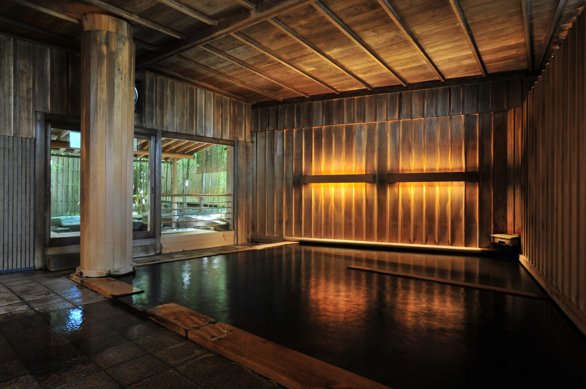
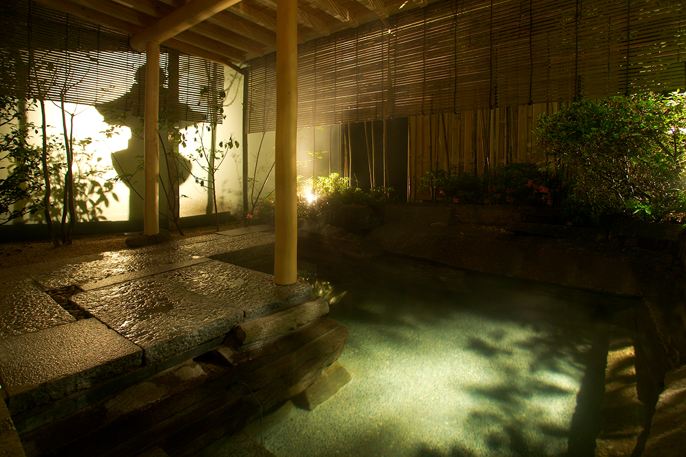
Бань в рёкане три, и у двух из них мужские и женские часы меняются утром и вечером. Баня «Рурико» названа в честь Якуси Рурико-нёрай, будды-целителя, которому поклоняются в храме Якуоин Онсэн-дзи: храм основали, чтобы охранять источник Ямасиро. В рёкане есть и просторная купель под открытым небом, где приятно сидеть, подставив щёки ветру. Третья баня, «Карасу-ю», наполнена паром от источника и устроена для медитации.
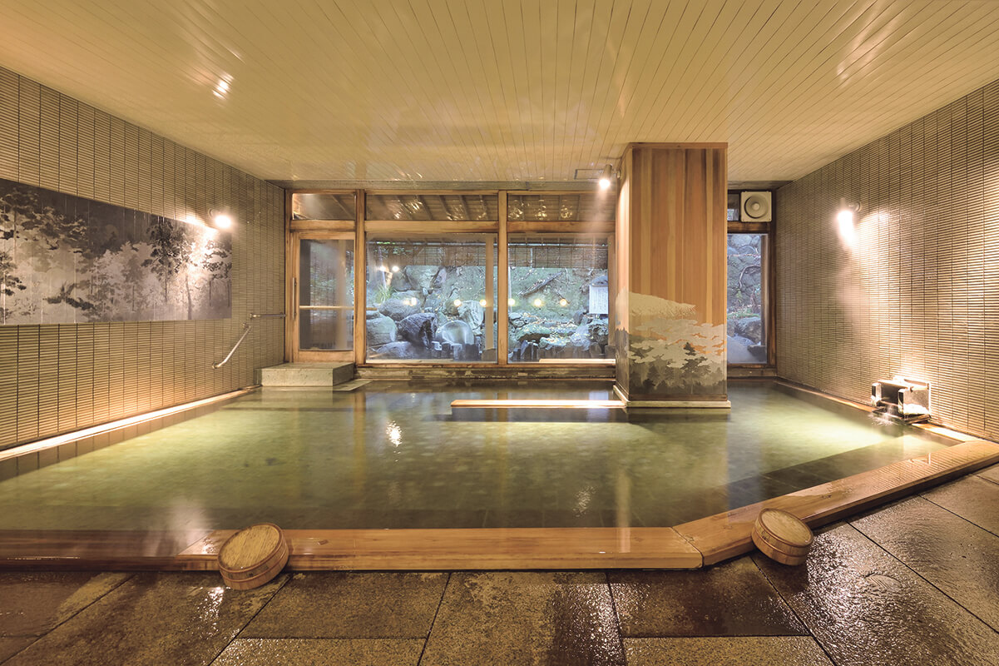
Ужин
Крабы из порта Хасидатэ
После бани начинается ужин в стиле кайсэки. В Каге всегда были и море, и горы: рыбу привозят из соседнего порта Хасидатэ на Японском море, а к ней подают овощи Каги. Зимнее Японское море, по словам знатоков, даёт вкус, который нигде больше не найти, и главный его символ здесь краб. Ужинают в отдельных комнатах, и никто не мешает разбирать краба столько, сколько хочется.
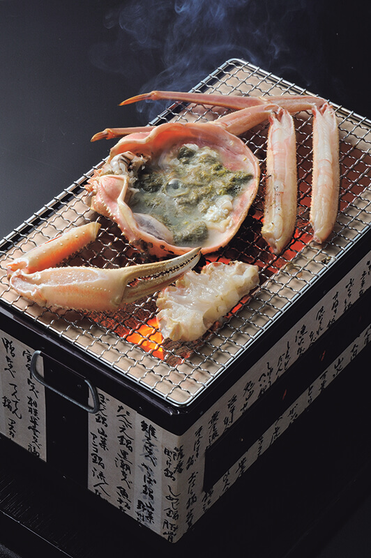
К блюдам подбирают посуду: керамику Кутани-яки и лак Яманака-нури мастеров, которые работают по соседству, а также вещи Росандзина Китаодзи, связанного с рёканом, так что ужин радует и глаз.
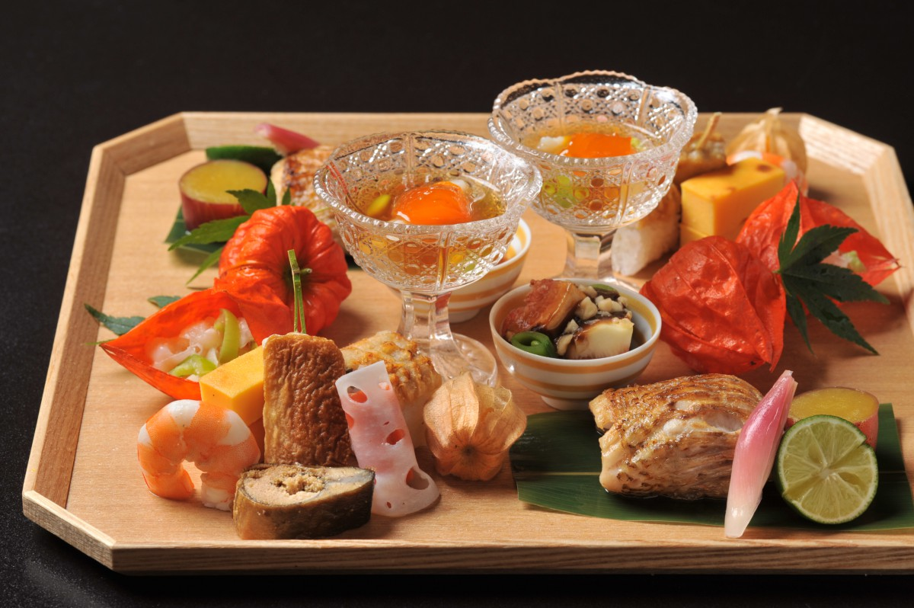
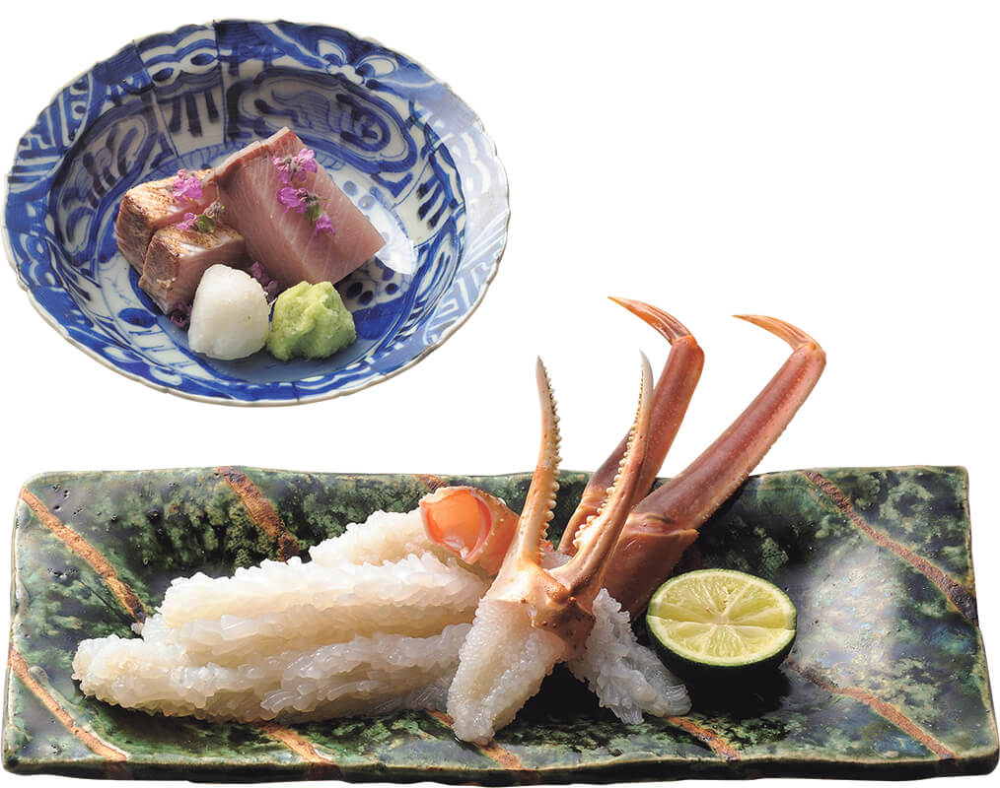
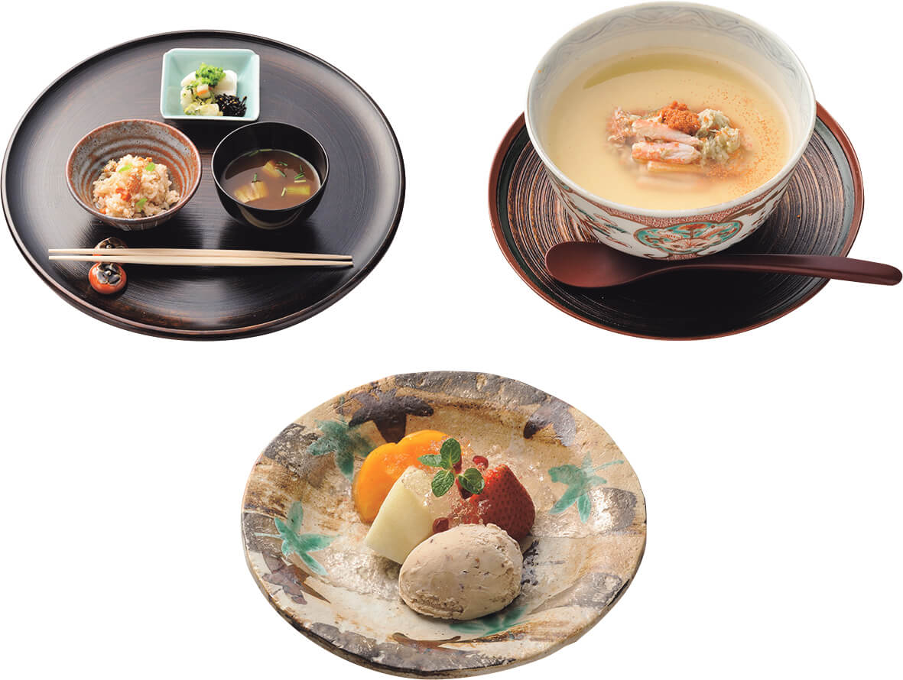
Кага к тому же славится сакэ. Можно пить местное, можно взять вино, а после ужина вернуться в номер и полежать в купели.
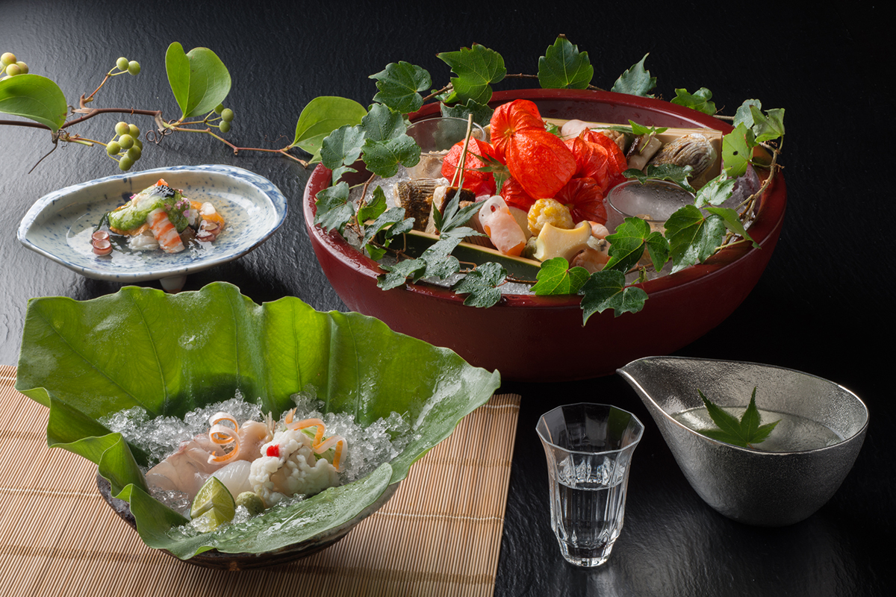
Художник
Росандзин Китаодзи в Ямасиро
Безвестный тогда Росандзин прожил в Ямасиро около полугода и подружился с семьёй Арая. Позже он ещё не раз останавливался в рёкане, ел здесь в своё удовольствие и показывал мастерство в каллиграфии, живописи и ремёслах. Многие его работы так и остались в доме.
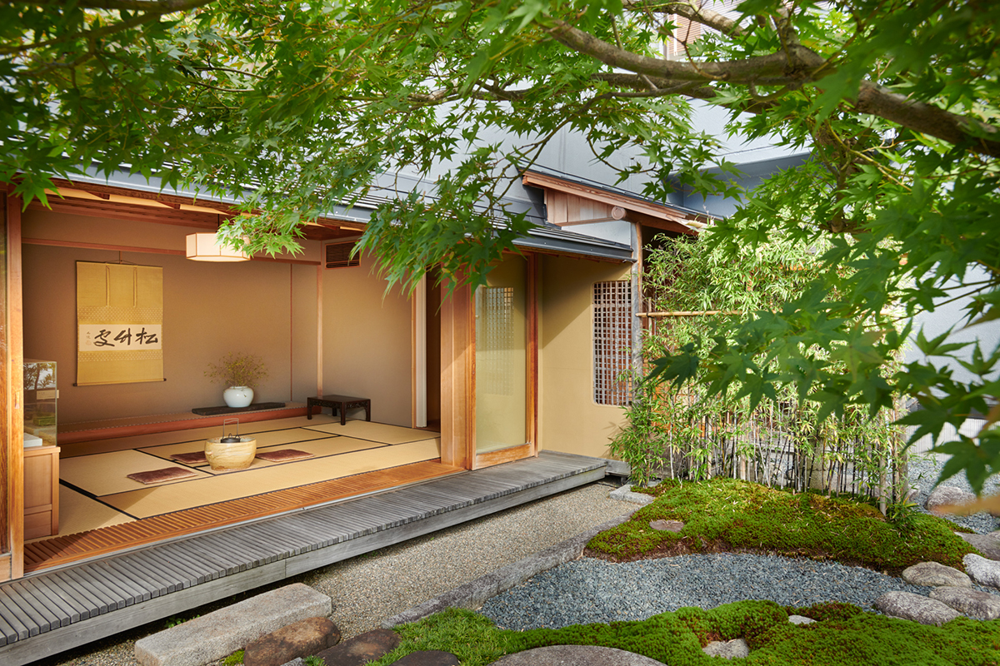
Кроме вещей Росандзина в рёкане много произведений, которые семья собирала поколениями, и современного искусства.
Прогулка
Керамика, соба и сладкий батат
По совету хозяев рёкана, Ямасиро стоит посмотреть не только любителям горячих источников, но и тем, кто любит ремёсла. Городок входит в край керамики Кутани-яки, и в трёх минутах ходьбы от рёкана работает мастерская «Суда Сэйка», которую ведёт уже четвёртое поколение. Говорят, что Росандзин открыл для себя гончарное дело, когда познакомился с её основателем.
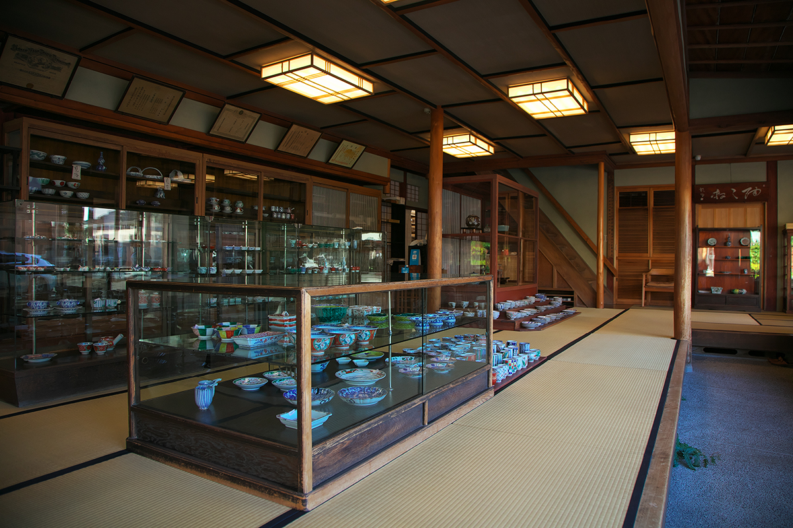
«Суда Сэйка»
- Адрес
- префектура Исикава, Кага, Ямасиро-онсэн, Хигасияма-мати, 4
- Телефон
- +81 761-76-0008
- Часы работы
- 9:00–17:00
- Выходные
- нерегулярно
На обед хозяева советуют «Соба Ямасэ». Хозяин заведения ещё и гончар и подаёт лапшу в своей посуде. Среди блюд есть оросисоба, где острота тёртого дайкона подчёркивает вкус гречневой лапши. Еда простая, но тонкая, и местные очень любят это место.
«Соба Ямасэ»
- Адрес
- префектура Исикава, Кага, Ямасиро-онсэн, 18-50
- Телефон
- +81 761-76-0357
- Часы работы
- 11:30–14:00
- Выходные
- понедельник и вторник (в праздники открыто)
Если есть время, загляните в «Ирохасоан», дом, где жил Росандзин. Это бывшая загородная дача, где молодой художник провёл около полугода. Здесь показывают вещи, которые он сделал в Ямасиро, и материалы о его жизни в городке, а из комнат хорошо смотреть на сад.
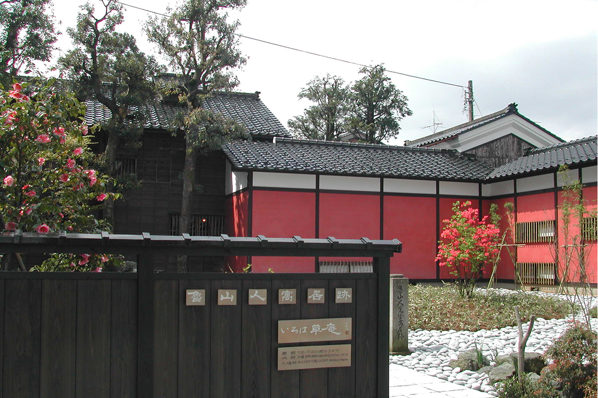
«Ирохасоан», дом Росандзина
- Адрес
- префектура Исикава, Кага, Ямасиро-онсэн, 18-5
- Телефон
- +81 761-77-7111
- Часы работы
- 9:00–17:00
- Выходные
- среда (в праздники открыто)
Передохнуть на прогулке можно в Monta-Yu Kaga. Эту лавку сладостей из батата навынос держит сам рёкан. Главное лакомство здесь монблан из батата горосима-кинтоки, одного из овощей Каги.
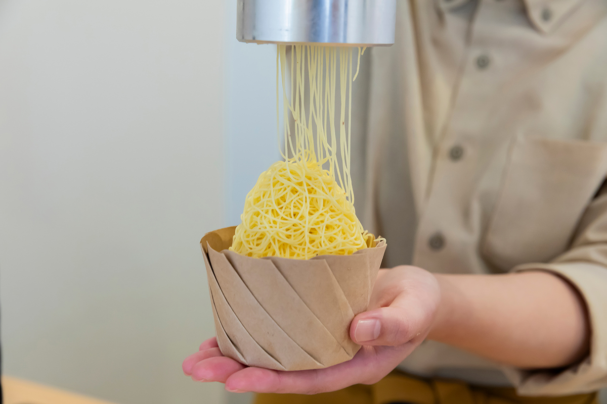
Monta-Yu Kaga
- Адрес
- префектура Исикава, Кага, Ямасиро-онсэн, 18-108-2
- Телефон
- +81 761-71-0257
- Часы работы
- 9:30–17:00
- Выходные
- четверг
Рёкан, которым владеет уже восемнадцатое поколение одной семьи, при каждом приезде показывает что-то новое. Здесь мягко и неспешно заботятся о госте, и в такой дом хочется возвращаться.
Araya Totoan
- Адрес
- префектура Исикава, Кага, Ямасиро-онсэн, 18-119
- Телефон
- +81 761-77-0010
- Номера
- 17
- Цены / Вход
- ночь с ужином и завтраком от 46 200 иен с налогом и сервисным сбором (2024 год)
- Заезд / выезд
- 14:00 / 11:00
- Как добраться
- от станции Кага-Онсэн около 10 минут на машине, от развязки Кага скоростной дороги Хокурику около 15 минут
- Сайт
- araya-totoan.com
Фото: Ко Миядзи, Фумито Като.